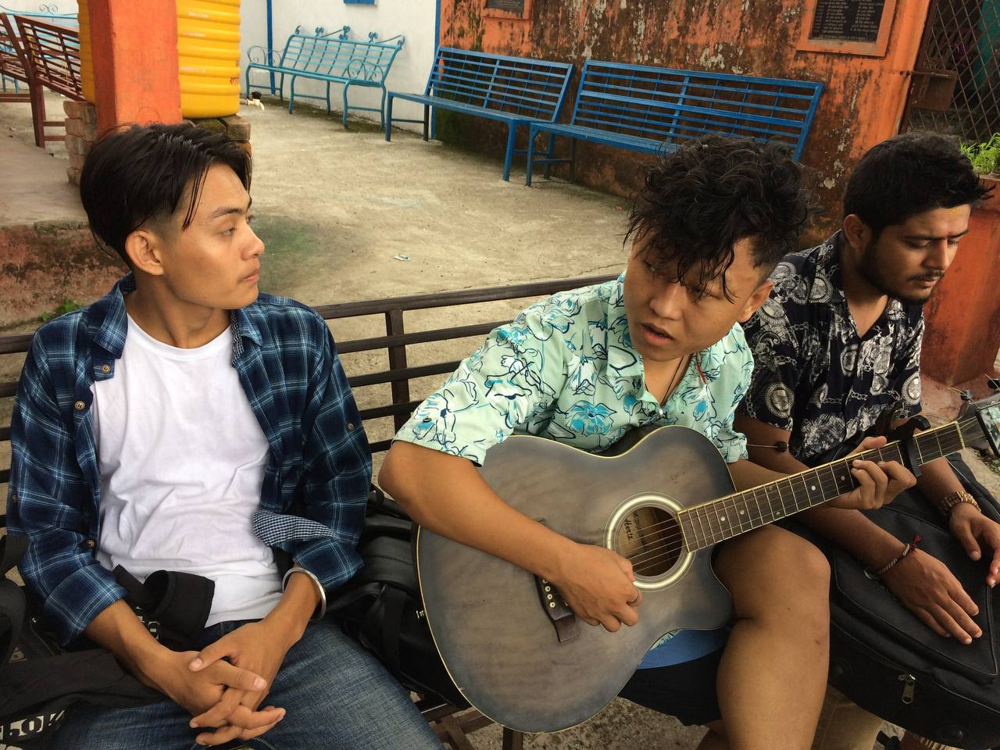
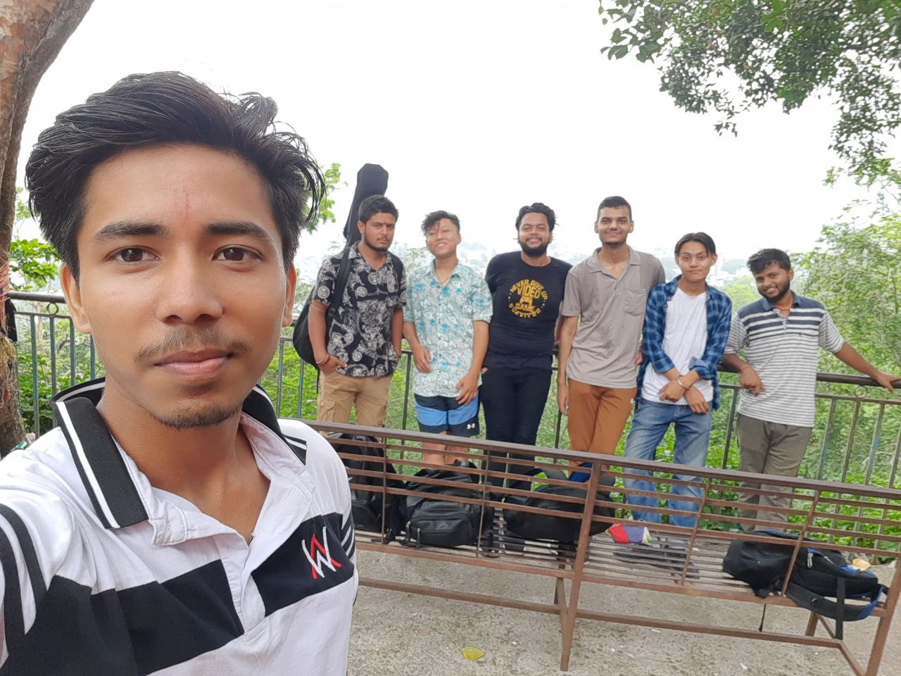

Dharan Trip
By Nischal
One day we all boys were having some discussion in a break. The discussion was all about everyone’s break up and life lessons to convince him not to be tensed and depressed. Everyone had a different story, some were funny, some were useless and some were made up stories. After listening to all story stuffs one came up with an idea of going for one-day tour to a very different place. We all were like- Not a bad idea. A different place carries a different vibes. So it was not a planned trip but out of sadness we all agreed going somewhere far from where we were. We decided to go Dharan, to the top hills- peaceful and fresh. We planned to meet at the junction the next morning.
The very next day, we the seven boys bunked the class, we had Guitar, bag packed up with underwears and a packet of ciggeretes. We took a bus and started our trip to Dharan.

Dharan is beautiful place cool, clean, well managed with high hills and water streams. The weather that day was supporting too. It was cloudy, cool day with low sun beams. After we reached Dharan the first thing the boys were doing was roaming everwhere around searching for ciggeretes. Bebek knew that it was foolish to expect help from the boys. We decided to head towards religious areas as God could only help him. We headed towards Dantakali temple. It is one of the holy places in Dharan, “Danta” meaning tooth- it is believed that when the goddess Sati, the first wife of the God Mahadev gave up her life it was distributed into pieces, one of the pieces which was the tooth part fell into that area so it was called Dantakali.We prayed there. We then headed to the viewpoint, we sat there sang beautiful song watching the view from the top point.
 